O termo instalação é incorporado ao vocabulário das artes visuais na década de 1960, designando assemblage ou ambiente construído em espaços de galerias e museus. As dificuldades de definir os contornos específicos de uma instalação datam de seu início e talvez permaneçam até hoje. Quais os limites que permitem distinguir com clareza a arte ambiental, a assemblage, certos trabalhos minimalistas e a instalações? As ambigüidades que apresentam desde a origem não podem ser esquecidas, tampouco devem afastar o esforço de pensar as particularidades dessa modalidade de produção artística que lança a obra no espaço, com o auxílio de materiais muito variados, na tentativa de construir um certo ambiente ou cena, cujo movimento é dado pela relação entre objetos, construções, o ponto de vista e o corpo do observador. Para a apreensão da obra é preciso percorrê-la, passar entre suas dobras e aberturas, ou simplesmente caminhar pelas veredas e trilhas que ela constrói por meio da disposição das peças, cores e objetos.
ayoi Kusama: Famosa por suas instalações imersivas e ambientes repletos de padrões repetitivos e pontos infinitos. Suas obras frequentemente exploram temas de obsessão e infinitude.
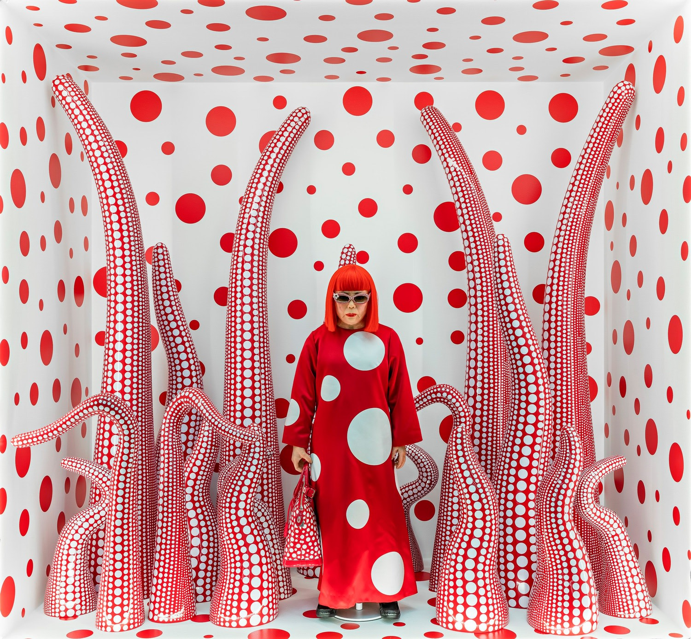 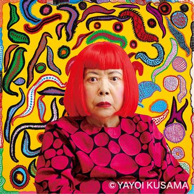
Damien Hirst: Conhecido por suas instalações que muitas vezes envolvem temas de vida e morte, como sua famosa série "The Physical Impossibility of Death in the Mind of Someone Living, que apresenta um tubarão em um tanque de formaldeído.
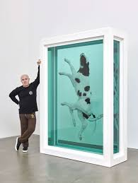 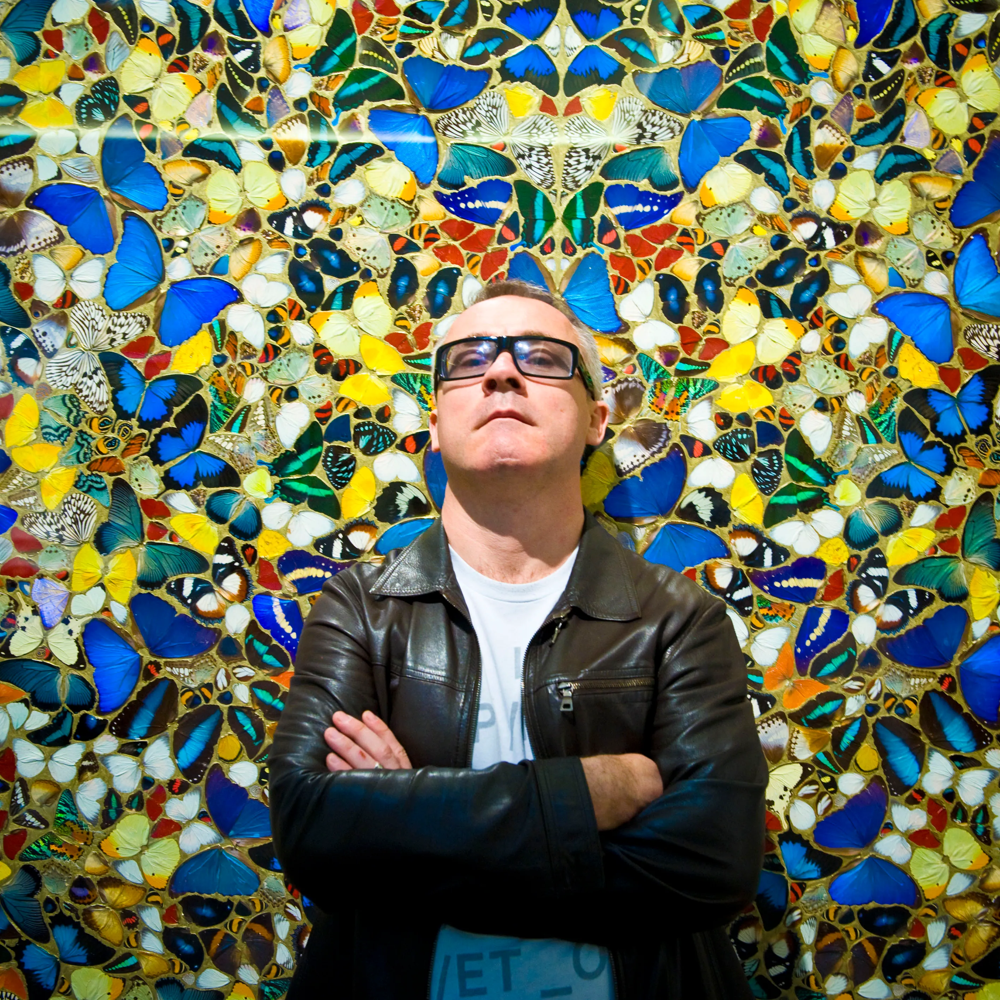
Christo e Jeanne-Claude: Um casal famoso por suas grandes instalações ao ar livre, como a "The Gates" em Central Park, e suas coberturas monumentais de edifícios e pontes.
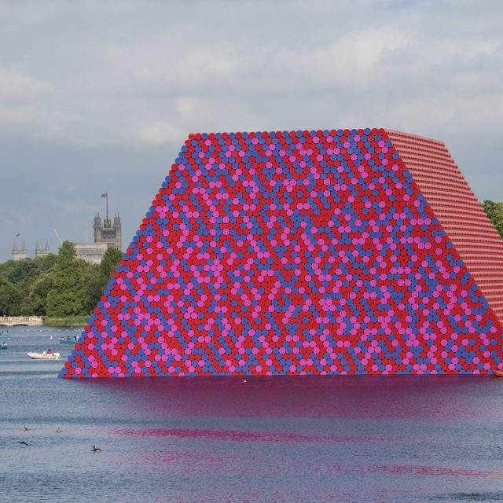 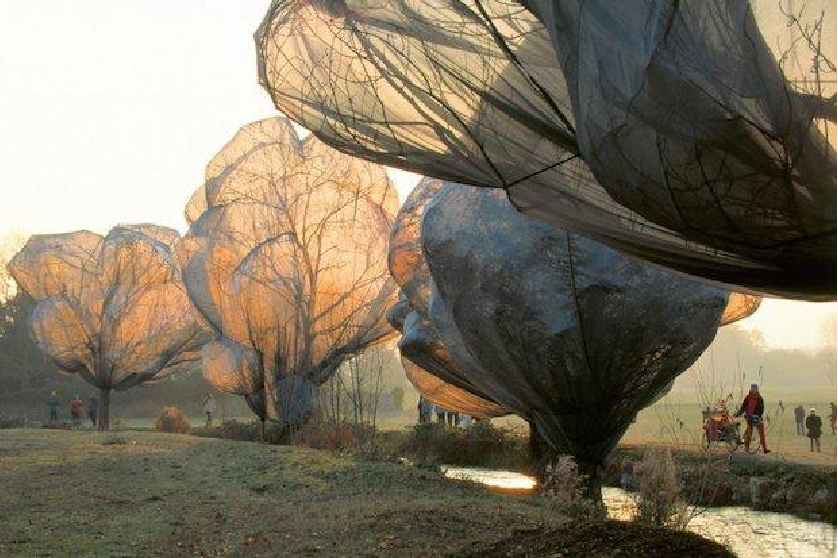
Ai Weiwei: Artista e ativista chinês que cria instalações que frequentemente comentam sobre questões sociais e políticas, como a instalação "Sunflower Seeds," que apresenta milhões de sementes de girassol de porcelana.
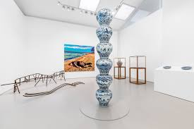 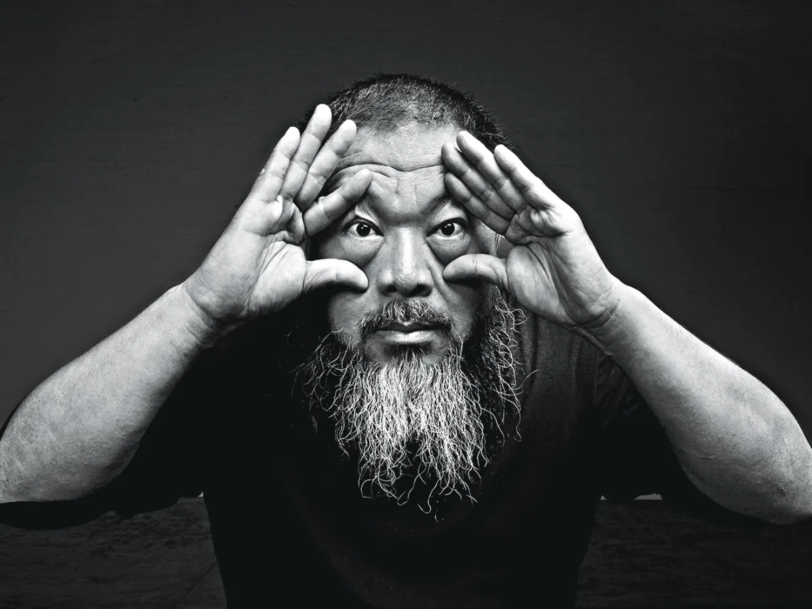
Olafur Eliasson: Conhecido por suas instalações que exploram a luz, a natureza e a percepção, como "The Weather Project" na Tate Modern e "Your Rainbow Panorama" na ARoS Aarhus Kunstmuseum.
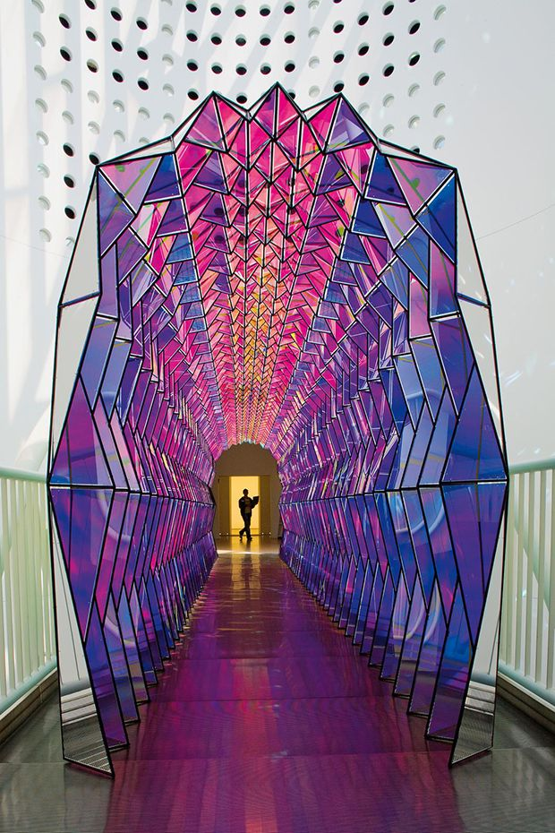 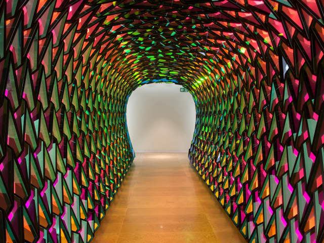
Marina Abramović: Pioneira da performance e da instalação, suas obras frequentemente envolvem o público de maneira intensa e pessoal, como em "The Artist Is Present."
 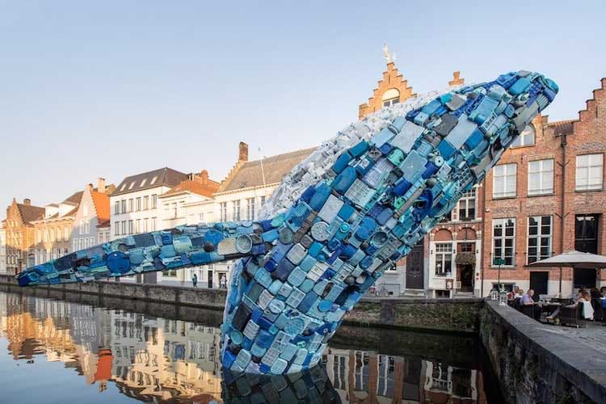 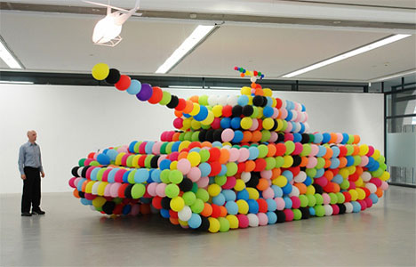
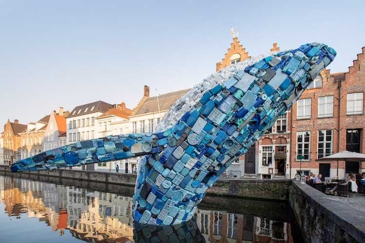 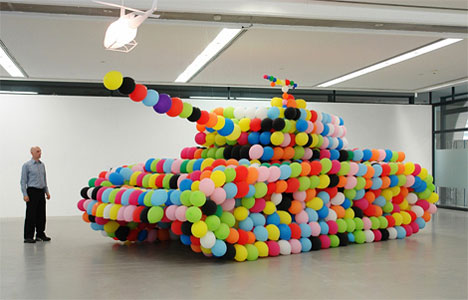